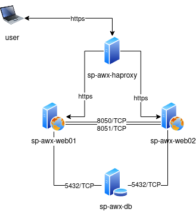

Využití linuxového serveru v praxi
Přednáška pro 2. ročník
1. Pár slov o firmě, mně a teamu
TietoEvry
- TietoEVRY má hlavní sídlo ve Finsku a zaměstnává téměř 24 000 expertů v desítkách zemí.
- https://www.tietoevry.com/en/about-us/our-company/
O mně
- 2 roky v TietoEvry
- 5 let v OKIN BPS
- 10+ let praxe s UNIXem
Team - Server Management Linux Operations
- spravujeme cca 7000 UNIX serverů
- 80% RedHat, SUSE, (Oracle Linux)
- 20% HP-UX, Solaris, AIX
- cca. 250 fyzických serverů
2. Co je to server?
https://wiki.li-on.cz/academy/linux/linux-workshop-1/1-hw-overview
4. Nejčastější využití Linux serveru
- Webový server (apache, nginx)
- Databázový server (Oracle, Mysql, DB2, MariaDB, psql)
- Aplikační server (php, java, python, C++)
- Síťově úložiště (NFS, SMB)
- DNS server
- Kontejnérový host (docker, podman, kubernetes)
- Virtualizační host (KVM, XEN)
- Vývojové prostředí (Vagrant)
- Síťový prvek (router, firewall)
- Automatizační nástroj (Ansible, Salt)
5. Nejčastější využití Windows serveru
- Doménový řadič
- Active Directory (ldap, GPO)
- Síťové úložiště (SMB)
- DNS server
- DHCP server
- DNS server
6. Vytvoření 4x VMs a instalace Ansible AWX pomocí playbooku (praktická ukázka)
-
Network diagram
 -
Hostnames, usage
sp-awx-web01 web node, application node (nginx, python, redis uwsgi) sp-awx-web02 web node, application node (nginx, python, redis uwsgi) sp-awx-db database node (postgresql) sp-awx-haproxy load balancer (haproxy) -
Configuration
Version: CentOS 7 (64-bit) Memory size: 2048 MB Processors: 2 vCPU Disk: 50 GB (dynamically aloc.) Network: 1 x bridged adapter
6. Vytvoření 4x VMs a instalace Ansible AWX pomocí playbooku (praktická ukázka)
6.1 Vytvoření obrazu disku
Vytvoříme 4 disky pomocí commandu virt-builder, který stáhne posledni dostupné ISO CentOS a vytoří disk image.
$ virt-builder $OS -o $path-to-disk --size $SIZE --format qcow2 --hostname $HOSTNAME --root-password password:$HESLO --firstboot-command 'jakykoliv command, ktery se spusti pri prvnim bootu'
$ for i in $(cat hostnames.txt); do \ virt-builder centos-7.8 \ -o /kvm/disks/$i.qcow2 \ --size 50G \ --format qcow2 \ --hostname $i \ --root-password password:redhat \ --firstboot-command 'useradd -m -G wheel ansible && echo ansible:redhat | chpasswd'; done
6. Vytvoření 4x VMs a instalace Ansible AWX pomocí playbooku (praktická ukázka)
6.2 Instalace VM
Vytvoříme 4 VMs pomocí commandu virt-install, který vytvoří virtuální servery a přiřadí jim již vytvořené disky z předešláho kroku.
$ for i in $(cat hostnames.txt); do \ virt-install --name $i \ --description '$i' \ --ram 2048 \ --vcpus 2 \ --disk path=/kvm/disks/$i.qcow2 \ --import \ --os-type linux \ --os-variant centos7.0 \ --network bridge=virbr0 \ --graphics none \ --console pty,target_type=serial \ --noautoconsole & sleep 5; \ done
6. Vytvoření 4x VMs a instalace Ansible AWX pomocí playbooku (praktická ukázka)
6.3 Přiřazení IP adres k hostům v inventory
Do každého virtuálního serveru se musíme přihlásit pomocí virsh console a zjistit IP adresy přiřazene DHCP serverem a následně je zapsat do inventory pro náš playbook.
Tato aktivita jde automatizovat pomoci statických adres nebo použití kupříkladu orchestračního toolu Terraform.
$ virsh console $HOSTNAME
6. Vytvoření 4x VMs a instalace Ansible AWX pomocí playbooku (praktická ukázka)
6.4 Instalace Ansible AWX
$ ansible-playbook -u ansible -i inventory.yaml --ask-pass --ask-become-pass configure_awx.yaml